The Stanford bunny scan contains 69,451 triangles. Move the camera away and the bunny covers fewer pixels, even though the scan has just as many triangles. How much geometry does the renderer need to preserve its silhouette and visible detail at that distance? Start with bounded clusters, simplify them into compatible alternatives and select from that hierarchy for the current view. The pages in memory determine which clusters can feed visibility and shading.
The experiment builds and measures a small virtual-geometry renderer using the original Stanford reconstruction. Unreal renders the same geometry with Nanite enabled. Each caption identifies the source of the image. The experimental renderer uses a constrained replacement tree and a deliberately conservative error estimate. Nanite repartitions geometry into a DAG and uses a different quality metric.
Ordinary programming and linear-algebra experience is enough; no Unreal background is required. Each chapter introduces its graphics concept before the implementation. The source baseline is Unreal Engine 5.8.1 at 71fe36aac5a8df5ccd66c763ffc902b29b6a9c43, and the code links require Epic repository access. The original Nanite presentation describes the 2021 design, while this checkout also contains later programmable rasterization and tessellation paths. The mathematical derivations appear inline, with expandable LaTeX source. Lumen has its own independent lighting essay.
How much geometry does the image need?
A triangle mesh is an indexed list of positions together with attributes such as surface normals and texture coordinates. Three indices identify a triangle. An instance places this reusable geometry in the world with a transform: a rule that moves, rotates, and scales its local coordinates. The camera then transforms world positions into a projected image. Rasterization determines which pixel samples a projected triangle covers. A material program evaluates the surface properties needed to shade those samples.
In a conventional draw, the CPU assembles vertex buffers, index buffers, material bindings, and a draw command. The GPU transforms vertices, assembles triangles, rasterizes coverage, and runs shaders. The arrangement works well when each triangle covers a substantial part of the picture. A scanned stone wall with millions of triangles and only a few hundred pixels wide on screen is a poor fit. Most of its triangles contribute less than one pixel, yet a conventional draw still submits the full mesh. Batching many objects cuts CPU commands but leaves the GPU with the same excess triangle work.
A deliberately simplified example makes the imbalance concrete. A wall covers 800 by 400 pixels, or 320,000 pixel locations. Its source mesh contains 8 million triangles. Submitting all of them gives 25 source triangles per pixel location before counting overdraw, hidden faces, or other views, far more independently resolved shape than the image can show. That does not prove 320,000 triangles would suffice: silhouettes, sharp depth changes, perspective, and sampling all matter. It does show why source triangle count is a poor cost target.
A traditional level of detail, or LOD, swaps the whole mesh for a simpler one with distance, which already moves the objective toward image complexity. A courtyard wall that runs from the camera to the far corner exposes the limitation: one global LOD either overspends on the distant part or simplifies the near part too aggressively. Different portions of the same mesh need different resolutions. To make that practical, those portions also have to be culled, stored, and requested independently.
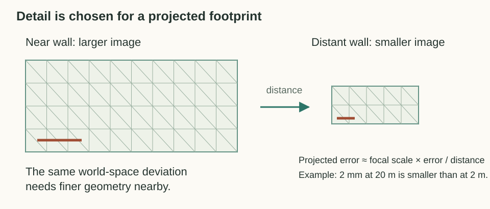
Nanite's central decision is to preprocess geometry into small, bounded units and several related approximations, then choose among them on the GPU. That moves much of the per-object, per-LOD decision away from CPU draw submission. The original mesh does not disappear: the build still reads it, derives the representation, stores it, and sometimes keeps alternative geometry for other consumers. Virtual geometry changes runtime access and granularity; it does not create infinite storage.
The runtime has more than the main camera to satisfy. Shadows need views from lights, and Lumen's surface captures need views of materials from directions that expose surfaces to a cache. A scheme that works for one camera would leave much of a modern frame expensive. Nanite therefore passes each view into selection and rasterization as explicit input, and different views can request different detail from the same shared asset. The geometry representation is reusable; the selection is temporary work for one view.
Geometry and appearance stay separate throughout. A flat wall with an expensive layered material can have few triangles and still shade slowly, while a highly detailed unlit statue can carry many source triangles and shade cheaply once selection is done. Nanite reorganizes geometry processing and visibility while still accommodating material work. Lumen consumes geometry and material information to approximate light transport. Polygon count alone cannot give either subsystem a useful performance budget.
The Stanford bunny as a test mesh
A diagram can explain why clusters exist, but not whether a particular partition, simplifier, or rasterizer works. That takes an executable specimen. This laboratory starts with the original Stanford bunny, builds geometry replacements, chooses a view-dependent cut, resolves visibility, and reconstructs a material from the winning triangle. Every mesh image in this laboratory is rendered from the arrays those operations produce, and every count comes from the accompanying machine-readable results. The Unreal captures elsewhere in this essay exercise the actual engine; these figures expose intermediate arrays that the engine does not normally display.
This Python implementation is a CPU, boundary-locked replacement tree inspired by Nanite. It implements connected clustering, adjacency-driven grouping, quadric edge collapse, conservative error propagation, view-dependent selection, hierarchical-depth rejection, two-pass recovery, depth-and-identity rasterization, and surface reconstruction. It does not implement Unreal's repartitioned cluster DAG, compressed page encoding, page streaming, GPU work queues, mesh shaders, or the engine's attribute-aware simplification metric. These pictures are not Nanite debug captures. The code does give an operational explanation of the relevant invariants, and the tests measure and assert them.
The input is bunny/reconstruction/bun_zipper.ply from the Stanford 3D Scanning Repository. It contains 35,947 position records and 69,451 triangles; 34,834 positions are referenced by triangles. Stanford identifies the reconstruction as having holes in its underside, which we preserve. Credit for the scan belongs to the Stanford University Computer Graphics Laboratory. The provenance record gives the archive URL, exact SHA-256 hashes, transformation, attribution, and the repository's research/noncommercial conditions. The reproducible source downloads the model locally instead of folding it silently into the engine's asset library.
The laboratory normalizes the bunny to height one, keeps its original Y-up orientation, and centers it horizontally. A separately exported OBJ rotates that same scan into Unreal's Z-up convention and scales it to height 100 centimeters. The two scales matter when reading a world-space error: a world-space error on the one-unit bunny does not carry over as centimeters on the imported scan. If a replacement has error 0.01 in this lab, uniform enlargement to a 100-centimeter bunny scales that error to one centimeter before projection.
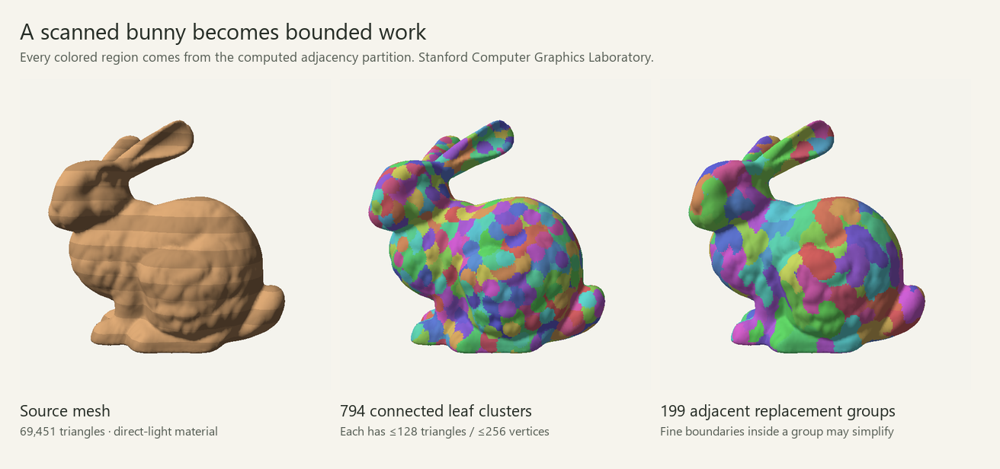
The laboratory begins with a static, opaque surface that has no authored UV seams, skeletal deformation, or masked coverage. Those features matter, but adding them now would obscure the question the implementation must answer first: whether a geometry replacement preserves coverage and whether visibility identity recovers the correct surface. Once those contracts are stable, additional attributes and programmable coverage can arrive with tests that isolate their effect. A hole from an invalid LOD transition should not be mistakable for a material or lighting bug.
The experiment follows one chain of responsibility. Construction creates alternatives; selection chooses a compatible subset; culling removes alternatives that cannot affect the view; rasterization chooses a surface at each sample; material evaluation interprets that surface; lighting computes its outgoing radiance. A triangle count is an answer about construction or selection, a sample identity about visibility, a roughness value about the material, and a shadowed radiance value about lighting. Arda's interfaces should keep those answers separate, so each stage owns the quantity it produces.
Build the same bunny in Unreal
The engine experiment imports the normalized OBJ into /Game/Labs/Bunny/StanfordBunny, enables Nanite on the static mesh, builds its derived resources, and places it in a lit scene. That import runs the local Nanite builder and produces Unreal's own representation of the source mesh. The CPU tree above is teaching output, not a prebuilt Nanite hierarchy. Keeping the two separate lets us compare their mechanisms without treating the teaching format as an Unreal asset format.
Native resource inspection records 69,451 build input triangles, 34,834 input vertices, 1,133 clusters across hierarchy levels, 23 hierarchy nodes, and eight page-state records, one of them the root page. The PLY declares 35,947 vertices; import/build processing does not guarantee that unused or coincident source entries survive as distinct build vertices. That 1,133 is an asset hierarchy count, not the number of clusters this camera draws. Do not compare these counts directly with the CPU lab's leaf-cluster count; they measure different things.
The capture runs on DX12 with Shader Model 6 and r.Nanite.MaxPixelsPerEdge=1; that engine setting is not the reference lab's conservative correspondence threshold. The engine build data and exact capture modes are in the Nanite capture report, and the reproduction scripts include the source, project configuration, and native inspection bridge.
Small clusters are useful only if their boundaries remain compatible
The first step toward local LOD is to partition a mesh into clusters. A cluster is a bounded group of nearby geometry with metadata that makes it manageable as a unit. For the triangle path in the inspected engine, shared definitions allow at most 128 triangles and 256 vertices per cluster. Those are capacities, not a guarantee that every cluster is full. The limit keeps work and storage bounded and lets the GPU operate on a known upper size. The source establishes the constants in NaniteDefinitions.h.
Suppose the wall starts as four adjacent clusters, A through D. A coarser version might independently strip vertices from each cluster until each has half as many triangles. Neighboring clusters share a geometric boundary, though. If A moves that boundary and B does not, the surfaces no longer meet and the renderer produces a hole even though each cluster simplified reasonably on its own. No amount of antialiasing repairs that gap; the representation itself is wrong.
The obvious repair is to freeze every vertex on every cluster boundary, so independent simplification cannot pull shared edges apart. A hierarchy that keeps the same boundaries forever eventually spends most of its coarse triangles on boundaries that should have vanished. Imagine a long line of tiny stone chips along the original partition between A and B. At a distance where the wall should be nearly flat, the frozen partition still needs enough vertices to preserve every chip.
Nanite avoids that trap by simplifying groups of clusters together. Inside a group, old boundaries become interior edges and can simplify, while the group's outside boundary stays constrained for compatibility with its neighbors. The builder then repartitions the simplified result into new clusters, and the next grouping puts an old outer boundary inside a new group. Alternating simplification and repartitioning keeps an arbitrary original partition from becoming a permanent geometric obligation.
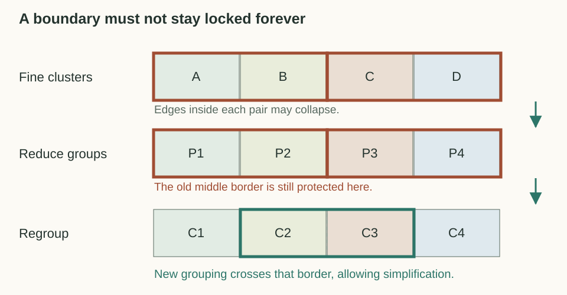
The current builder makes this structure explicit. FCluster::SimplifyTriangles walks external edges and locks their endpoint positions before reduction. FClusterDAG::ReduceGroup merges a group's children, simplifies the result, splits it back into bounded clusters, and assigns shared LOD data to the parents. The runtime depends on the invariant those operations preserve. See the external-edge constraints and the group reduction and parent metadata.
A simplifier must account for more than position. Texture coordinates determine where a brick texture is sampled, normals control reflected light, and material boundaries can separate stone from metal. A reduction that minimizes only positional displacement can ruin appearance. The builder therefore has attribute-aware costs and settings, and some data cannot be interpolated as an ordinary continuous coordinate. An automatic geometry pipeline still depends on authoring semantics.
Each coarse result records an error measure relative to the finer geometry. Conceptually, this is a bound or a conservative estimate of the spatial deviation introduced by replacement. The runtime projects that error into the view to decide whether the replacement is acceptable. The current reduction propagates child errors upward and forces parent values to respect the grouped construction, taking maxima while it builds the parent data. Without that monotonic relationship, traversal could accept a coarse approximation that claims to be more accurate than a descendant even though it discarded more information.
The triangle path is the simplest way into Nanite, but this checkout also has curve and voxel shape-preservation branches in the same builder. Their presence in ReduceGroup does not mean every content type on every platform uses them. The build/runtime contract remains stable: the build stores a hierarchy of compatible alternatives with error and bounds, and runtime selection obeys those relationships. When reading newer Nanite code, check which geometry branch the asset actually built before relying on that contract.
Partition triangles, then make replacement regions
Construction starts from the triangle adjacency graph. Each triangle is a graph vertex, and two vertices are adjacent when their triangles share an undirected edge, stored as the sorted pair of endpoint indices. This graph is a construction tool; the camera never traverses it. On the bunny, the code builds the edge-to-face map once, looks up neighboring faces, and grows connected regions from deterministic seed triangles. Candidate neighbors nearest the seed centroid come first. A region stops before it exceeds 128 triangles or 256 distinct vertices.
This greedy partitioner produces 794 clusters, with average occupancy below 128 because disconnected regions, boundaries, and the growth heuristic prevent perfect packing. A capacity is a limit; the representation does not guarantee average occupancy near it. Unreal's triangle capacities are defined in NaniteDefinitions.h, but its graph partitioner and grouping strategy are more sophisticated than this laboratory's centroid-prioritized traversal; matching a capacity does not make the two partitioners equivalent.
A cluster holds triangles and local vertex references, plus the bounds and metadata needed to cull it, decode it, and associate it with an approximation error. The builder's Nanite::FCluster is a mutable construction representation; the similarly named shader structure is a decoded runtime view of packed data. Treating them as one universal C++ object would mix asset-building ownership with GPU access. The table lists selected builder fields from before compression, not a promised binary layout. The definition is the authority.
What the builder's FCluster provides
| Information | Representative fields | Why construction needs it |
|---|---|---|
| Geometry and appearance association | Verts, Indexes, NumTris, MaterialIndexes | Describe the current approximation and preserve the material assigned to each triangle. |
| Boundary constraints | ExternalEdges, NumExternalEdges | Mark edges whose positions must remain compatible with neighboring replacements. |
| Extent and approximation quality | Bounds, SphereBounds, LODBounds, LODError, ParentLODError, EdgeLength | Supply geometry bounds, LOD decisions, and projected raster-size reasoning. |
| Construction relationships | GroupIndex, GeneratingGroupIndex, MipLevel | Relate an approximation to the groups that consume and produce it. |
| Encoding work | QuantizedPositions, QuantizedPosPrecision, PageIndex, StripIndexData | Prepare a runtime representation rather than uploading the mutable builder object directly. |
Next the builder constructs a graph between clusters using shared exterior edges. A group begins with one cluster and repeatedly adds the adjacent cluster with the greatest shared-edge count, up to four children in this laboratory. When a disconnected remnant has no adjacent candidate, a nearby region can join the group; simplification does not reconnect geometry that was already separate. Four is a teaching choice, not Nanite's production group-size constant. What the group needs is a known exterior and a replacement that covers the same region of the original mesh.
Merge a group's child geometry by shared vertex identity. An edge used by exactly one triangle in the merged region lies on its exterior, so its endpoints are locked. An old cluster boundary shared by two children now lies inside the merged region and can be simplified. Locking the exterior is the mechanical answer to the seam problem: a change in resolution does not let one side move the shared boundary. Without grouping, simplifying every original cluster independently would keep too many small boundaries forever.
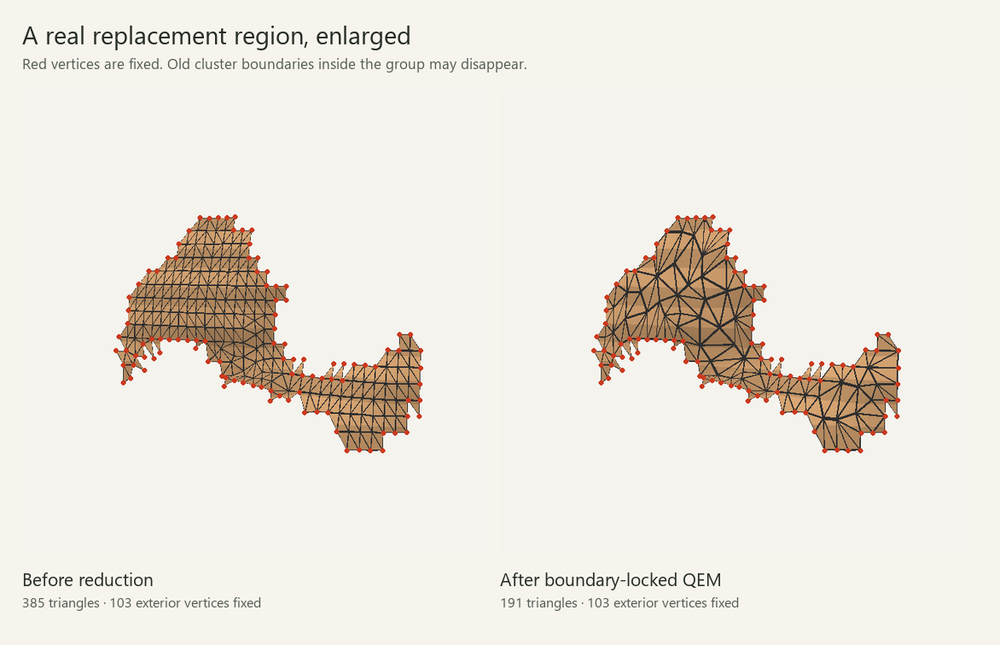
Unreal exposes the group-level contract in FClusterGroup. Its children are cluster references, and its bounds and parent error drive replacement decisions. The laboratory keeps a strict tree of such regions, which makes compatibility easy to prove. Unreal can repartition the simplified output and regroup it across earlier boundaries, producing the richer cluster DAG described in the hierarchy chapter. A tree is an implementable starting point, but it can retain awkward boundaries and overlarge coarse regions that production construction avoids. Compare the group definition and the reduction implementation.
What FClusterGroup provides
| Fields | Meaning | Practical use |
|---|---|---|
Children | The finer cluster references being replaced together. | Defines the replacement relationship; it is not a draw-call list. |
Bounds, LODBounds | Geometric and LOD-related spatial support. | Coordinate decisions for children that must transition coherently. |
ParentLODError, MipLevel | Error of the coarser replacement and construction level. | Maintain ordered approximation decisions. |
PageRangeKey | Association with encoded page ranges. | Connect compatibility to the data that must be resident. |
MeshIndex, AssemblyPartIndex, bRoot, bTrimmed | Asset association and construction state. | Keep mesh/assembly identity and trimming/root behavior distinct from geometry. |
How the simplifier chooses an edge collapse
An edge collapse replaces endpoints with one position , updates incident triangle indices, and removes triangles that become degenerate. Choosing an edge and a replacement position requires a scalar cost, and the classical quadric-error idea measures how far the candidate position moves from the supporting planes of nearby triangles. The derivation below gives the version implemented here. The method is Garland and Heckbert's quadric error method; the area weighting, boundary rules, finite candidate fallback, and displacement envelope are this laboratory's own choices.
For a triangle with positions , form its unit normal . Its plane is , where . Because the normal has unit length, is signed distance to that infinite plane. Introduce homogeneous vectors and . Squaring the distance gives a quadratic form:
LaTeX source
E_\pi(x)=(n^Tx+d)^2=(\pi^T\bar x)^2
=\bar x^T(\pi\pi^T)\bar x.Let be triangle area. Accumulate at each vertex. The candidate collapse receives , including the accumulated history already attached to either endpoint. Shared incident planes can therefore contribute more than once; this is the specified accumulated cost, not a fresh, uniquely weighted surface integral. Each is symmetric and positive semidefinite because it is a nonnegative sum of outer products. Decompose it into a 3-by-3 matrix, a vector, and a scalar:
LaTeX source
Q=\begin{bmatrix}A&b\\b^T&c\end{bmatrix},\qquad
E(x)=x^TAx+2b^Tx+c.LaTeX source
\nabla E(x)=2Ax+2b=0
\quad\Longrightarrow\quad Ax=-b.If is invertible, solving the linear system gives the unconstrained minimizer. If all incident planes are parallel, motion along the plane is poorly constrained and is singular; the laboratory then compares the two endpoints and the midpoint. Even with an invertible system, it rejects a solution implausibly far from the original edge and compares the remaining finite candidates. Production code needs scale-aware numerical conditioning. An arbitrary determinant threshold is acceptable in a bounded experiment, though not in a universal asset importer.
Boundary locking adds a hard constraint. If one endpoint is locked, the candidate position must equal that endpoint. If both endpoints are locked, this lab refuses the collapse. Before accepting an interior-edge candidate, it checks the full local simplicial link condition: the intersection of the endpoints' links must equal the edge's link. In a triangle complex, a vertex link contains both neighboring vertices and opposite edges. The common neighboring vertices must be exactly the edge's opposite vertices, and the two vertex links must share no edge. Checking only neighboring vertices is insufficient: a tetrahedron passes that weaker test but collapsing one edge would create duplicate opposite-winding faces. The regression suite retains that tetrahedron unchanged while allowing a legal octahedron reduction. These local checks assume valid input topology; they are not a repair algorithm for arbitrary nonmanifold imports.
The simplifier also rejects a collapse whose surviving triangles invert or approach zero area and verifies that no two output triangles have the same unoriented vertex triple. The lowest cost is considered first using a heap. Endpoint version numbers invalidate stale heap entries after surrounding geometry changes.
Formally, for a simplex in the triangle complex , its link is the set of simplices disjoint from that form a simplex together with it. This is the local combinatorial condition being checked, following the terminology of Dey, Edelsbrunner, Guha, and Nekhayev:
LaTeX source
\operatorname{Lk}_K(\sigma)=\{\tau\in K:\tau\cap\sigma=\varnothing,\ \tau\cup\sigma\in K\},\qquad
\operatorname{Lk}_K(a)\cap\operatorname{Lk}_K(b)=\operatorname{Lk}_K(ab).Cost and error are different quantities. With area weighting, has units of length to the fourth power, area times squared distance, so its square root is not a length. Even an unweighted plane-distance sum is not automatically a maximum surface-deviation bound, because a candidate can stay near the supporting planes while moving along them. This lab therefore does not feed quadric cost into the screen-space LOD test and call it geometric error. Unreal likewise has explicit geometric and attribute handling inside its simplifier; its returned error cannot be inferred by reading this small implementation. The actual builder sets attribute weights and edge behavior before simplification.
Instead, track a conservative displacement envelope. Initially a representative vertex has radius zero. If its current position is , every original vertex assigned to it lies within radius . After replacing by , the triangle inequality gives a valid new radius:
LaTeX source
\|p-x\|\leq\|p-a\|+\|a-x\|\leq r_a+\|a-x\|,LaTeX source
r_x=\max\big(r_a+\|a-x\|,\ r_b+\|b-x\|\big).For a triangle point represented by nonnegative weights summing to one, its mapped-point displacement obeys . This bounds the defined vertex-collapse correspondence, including triangles that map to an edge, rather than measuring the nearest point on the simplified surface. Add the largest child envelope when reducing a parent region to account for earlier levels. The bound is deliberately pessimistic, but its meaning is explicit, and the selection experiment shows how many triangles the pessimism can add.
A level of detail becomes a valid cut through a graph
Grouping and repartitioning change the hierarchy's shape. A tree gives each child one parent. In Nanite, several coarse clusters can jointly replace the same group of finer clusters, so a fine cluster can sit under more than one coarse cluster in the dependency relation. The result is a directed acyclic graph, or DAG: edges run from one resolution toward another, paths can share descendants, and the build creates no cycle back to the same resolution.
In a tree, drawing one parent instead of its children is a local decision. In the Nanite graph, a coarser representation may consist of several parents that must agree on the replacement. Drawing one coarse parent and an arbitrary subset of its finer shared descendants can duplicate or omit geometry. A valid state is a cut: a set of selected alternatives that covers the required surface exactly once while respecting construction dependencies.
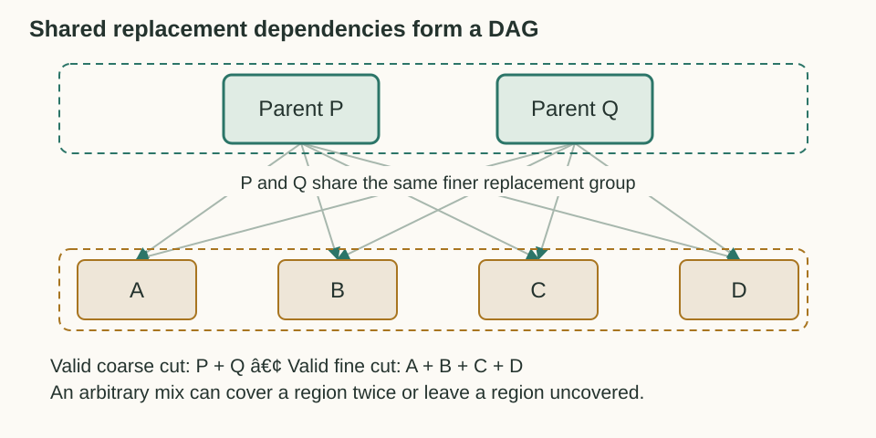
The view test starts with a small-angle approximation. If an approximation has world-space error e, lies about distance z along the view, and the projection has focal scale f in pixels, the projected error is roughly f e / z. With f at 1,000 pixels and e at 0.002 meters, the error is about one pixel at two meters and one tenth of a pixel at twenty meters. These numbers explain the test; they are not Unreal's complete culling equation.
The complete implementation handles bounding volumes, nonuniform scale, perspective, orthographic views, deformation, and conservative estimates over an entire cluster, so it cannot reduce to the distance from the camera to one vertex. In NaniteClusterCulling.usf, traversal compares projected scales with stored LOD errors and then chooses raster work. The view carries its own LOD scale. Bounds and scale factors implement the same geometric idea for cases the one-line formula omits.
For a wall stretching away from the camera, near groups can select finer replacements while far groups stay coarse. Grouping constraints limit how independently those choices happen, but they still allow much finer control than one LOD for the whole wall. A shadow view may choose differently because its projected footprint and quality target differ. A Nanite frame is therefore better described as a view selecting a set of clusters than as a mesh sitting at LOD 2.
The traversal hierarchy and the simplification dependency graph are separate structures. Bounds let the GPU reject regions without visiting every cluster; group relationships define which geometry can replace which. They cooperate but answer different questions. An implementation can encode both compactly in one data structure, provided the logical responsibilities stay separate. A traversal-bound bug causes missing or excess work; a replacement-dependency bug creates discontinuities even when every visibility test is correct.
An acceptable projected error does not make every difference invisible. Visibility also depends on motion, silhouette, material, contrast, and temporal reconstruction. The source default for r.Nanite.MaxPixelsPerEdge is one, while other settings govern hardware raster thresholds and dynamic scaling. Those values are quality and scheduling controls, not proof that geometry error is exactly one pixel everywhere. The current controls keep LOD and rasterization parameters separate.
Turn successful reductions into a selectable hierarchy
The first grouping takes 69,451 triangles to 34,859. Repeating adjacency grouping and reduction gives 17,561, 8,963, 4,583, and then 2,291 triangles once all regions meet at a common ancestor. Further reductions of that root can produce still coarser alternatives while retaining the original scan boundaries. The source model is never overwritten: every parent has its own geometry and keeps its child references. Runtime selection needs those alternatives available at the same time, not one mesh destructively simplified to the current camera.
Each replacement region is partitioned again into bounded clusters for raster work, which is why a region count and a cluster count are different statistics: one parent region may need several clusters to store its coarse approximation. In the laboratory those clusters are selected together as the region's replacement, and they do not select children independently. That restriction keeps a tree cut straightforward and avoids claiming that arbitrary choices among repartitioned clusters are compatible.
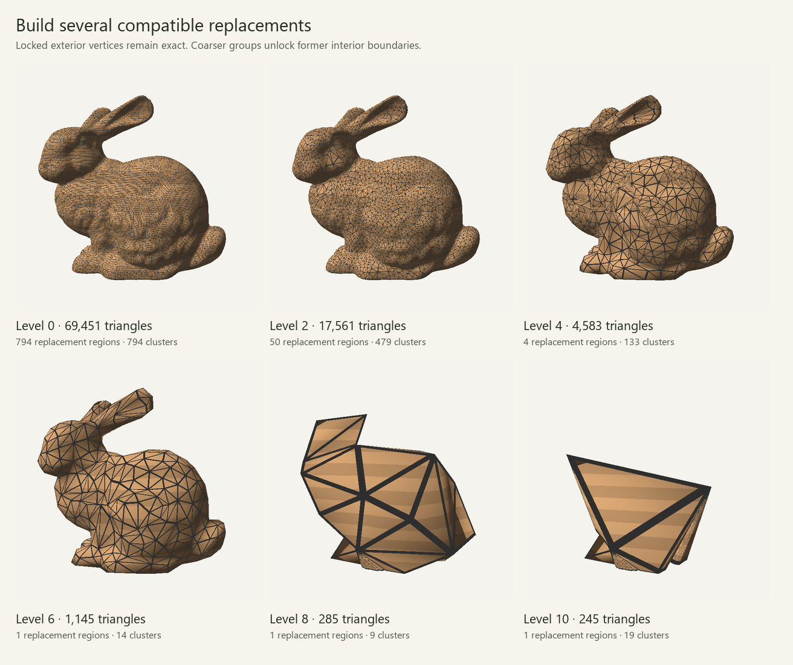
Further reductions of the root reach 1,145, 571, 285, 247, and finally 245 triangles. At that point the boundary, topology, and normal constraints permit no further collapse, and the builder stops rather than deleting scan boundaries to satisfy its 128-triangle target. The final root still occupies several clusters because the greedy connected partitioner encounters fragmented regions. Failing to reach a target is a valid reported result; it must not silently invalidate the construction contract.
A valid cut obeys two conditions: every leaf region is covered by exactly one selected ancestor, and no selected node has a selected descendant. A recursive traversal satisfies both by choosing either a node or all the required descendants beneath it. The implementation enumerates the original leaf IDs covered by each selected region and asserts exact, duplicate-free coverage. This catches the case a nonempty-list assertion misses: a list containing both a parent and one child looks plausible while double-rendering part of the surface.
Boundary preservation supplies the second half of the argument. Different selected regions can have different resolutions, but their common boundary descends from exterior edges locked during every replacement that exposed it. The code compares the entire exterior edge set before and after every group reduction and compares the associated positions exactly. That proves the construction invariant implemented here. It does not rule out every floating-point raster seam, self-intersection, or shading discontinuity in arbitrary imported content; those need their own tests.
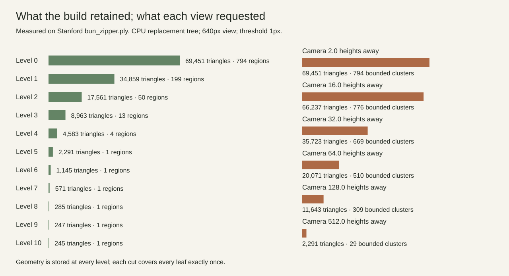
Nanite's construction goes further. FClusterDAG::ReduceGroup merges children, simplifies, partitions the result into parents, and propagates a shared parent error. Earlier boundaries can move inside later groups. The relationship is a DAG because clusters and replacement groups do not form an ordinary independent-child mesh tree, and a production implementation must preserve the group transition invariant while encoding and traversing it. Starting with a tree leaves the missing capability visible: the laboratory can explain compatibility without claiming production-quality partition freedom.
After construction, Unreal encodes the data for streaming and GPU access, replacing the CPU's mutable vectors with packed counts, offsets, quantization information, bounds, and material references. In Arda the builder's rich object and the runtime's packed record should have different owners and different APIs. A GPU decoder must reconstruct every field its culler, rasterizer, and material evaluator expect, so a change to bit packing is a producer-and-consumer change, not a local storage optimization. FPackedCluster shows that contract.
What FPackedCluster provides to GPU consumers
| Consumer | Information packed into the record | What would break if it disagreed with the decoder |
|---|---|---|
| Geometry decode and rasterization | Vertex/triangle counts, position/index offsets, position start and precision, bits per index. | Incorrect vertex addresses or reconstructed positions. |
| Culling and LOD | LOD sphere, box center/extent, error, edge length, relevant flags. | Wrong detail selection or disappearing visible geometry. |
| Material evaluation | Attribute offsets, decode-information offset, UV count and bit offsets, tangent/skinning flags, material information. | A correct visible identity reconstructing the wrong surface properties. |
| Additional representations | Extended-data, brick/curve information and parent-error data in this checkout. | Assuming every runtime cluster is an identical triangle-only payload. |
Look at Unreal's own clusters and groups
The cluster visualizer colors selected cluster regions in the current view. The group view that follows shows a different relationship: the groups Nanite's hierarchy uses. Colors are diagnostic identities, not material colors or error magnitudes. Compare these shapes with the CPU partition above and expect them to differ: Unreal uses its own partitioner, simplification, repartitioning, compression, and hierarchy construction.
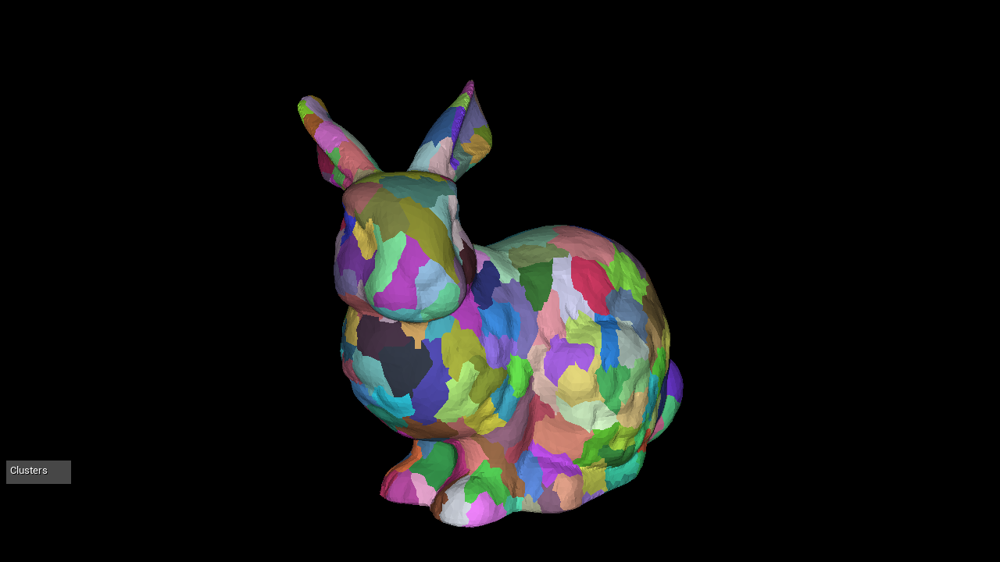
Clusters visualization. The CPU leaf partition is a separate result, with a deliberately simpler hierarchy. Open image at full size.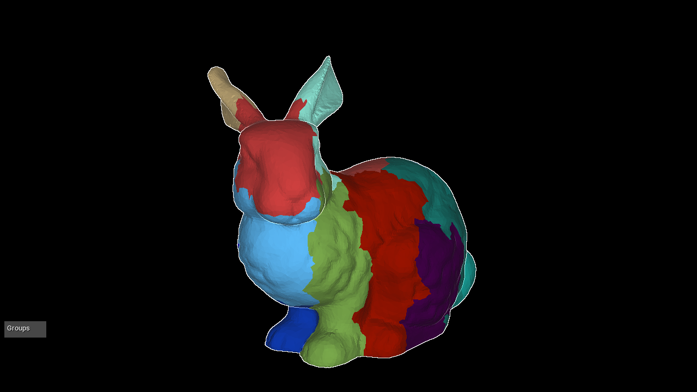
Groups visualization. A replacement group and an individual bounded cluster are different units. Open image at full size.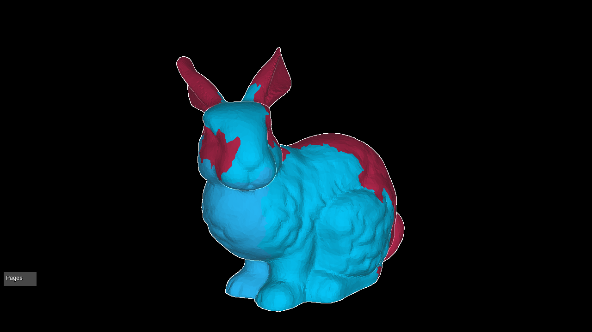
Pages visualization. Spatially adjacent selected work can refer to different storage pages; a page is a streaming allocation unit, not a semantic object. Open image at full size.Derive the camera's error test and inspect the cut
Take a perspective camera looking along positive camera-space Z. For a square-pixel image of height and vertical field of view , the focal length in pixels is . Ignoring an irrelevant image-center offset, the projection is . At the image center, a small transverse displacement projects to approximately pixels. That expression is an approximation: a finite displacement can also change depth, and off-axis points respond differently.
Differentiate the projection to make those assumptions explicit. Its Jacobian maps a small three-dimensional displacement to a two-dimensional displacement:
LaTeX source
J_s(X,Y,Z)=\frac fZ
\begin{bmatrix}1&0&-X/Z\\0&1&-Y/Z\end{bmatrix}.Writing , the two eigenvalues of are and . Therefore its largest singular value is . Integrate this derivative along the segment from an original point to its mapped replacement. If that segment stays at positive depth and has length at most , then
LaTeX source
\|s(p')-s(p)\|
=\left\|\int_0^1J_s(p+t(p'-p))(p'-p)\,dt\right\|
\leq\varepsilon\sup_{t\in[0,1]}\|J_s\|_2.For a replacement region with camera-space sphere center , radius , and displacement envelope , use . The entire correspondence segment is enclosed by the sphere enlarged by the envelope. An upper bound on transverse radius is . Provided , this gives the laboratory's acceptance test:
LaTeX source
e_{\rm px}\leq
\frac{f\varepsilon}{z_{\min}}
\sqrt{1+
\left(\frac{\sqrt{c_x^2+c_y^2}+R+\varepsilon}{z_{\min}}\right)^2}
\leq\tau.Here pixel, , and . A production culler must handle near-plane intersection separately, conservatively descending or clipping; the captured laboratory camera sweep keeps accepted bounds away from that singularity. For a general instance transform, a conservative world-space error multiplier is the largest singular value of its linear part. For uniform scale this is simply the absolute scale. Perspective projection belongs after that transformation. An orthographic camera instead has a depth-independent linear projection scale.
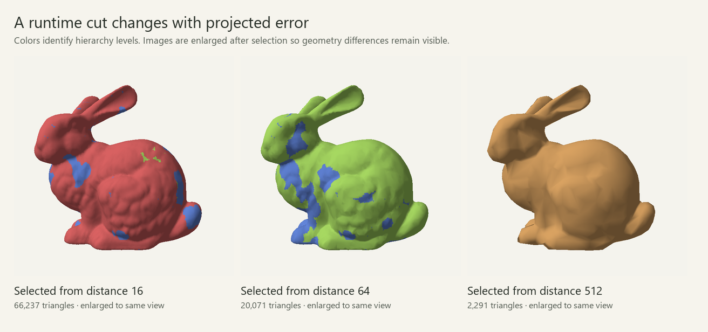
At distances 2, 16, 32, 64, and 128 bunny heights, the measured selected triangle counts are 69,451, 66,237, 35,723, 20,071, and 11,643. These are not competitive Nanite budgets. The correspondence envelope includes tangential vertex motion that may barely change the nearest geometric surface, and errors accumulate conservatively through the tree. At distance 64 the bunny covers only 122 samples in the 640-by-640 image, yet the lab submits 20,071 triangles. The counts measure how pessimistic the representation is.
Unreal's selection uses its own stored errors, projected-edge scales, view LOD scale, bounds, and deformation/instance information. ShouldVisitChildInternal tests a hierarchy slice's parent error; SmallEnoughToDraw tests a cluster and also participates in hardware-raster preference. Those expressions belong with their scale conventions; this lab's formula is not a replacement for them. The shader implementation shows the actual predicates. Underneath the difference in formulas, the builder defines what error means, and the runtime has to project that same quantity.
What FHierarchyNodeSlice provides during traversal
| Fields | Question answered |
|---|---|
LODBounds, BoxBoundsCenter, BoxBoundsExtent | Where is the child support, and how should its error be projected? |
MinLODError, MaxParentLODError | Which approximation interval can this subtree represent? |
ChildStartReference, NumChildren, bLeaf | Does the child reference another node or a page/cluster range? |
ResourcePageRangeKey, bLoaded, bEnabled | Is the relevant representation available and enabled? |
AssemblyTransformIndex, NumBones, BoneIndicesOffsetInDwords | Which assembly or deformation metadata accompanies the bounds? |
The CPU lab keeps all alternatives resident. A streaming implementation needs a second acceptance condition: the desired finer replacement is usable only when its pages and dependencies are installed. Until then it must hold a complete resident coarse cut and issue requests. Missing detail should cost quality temporarily, not remove geometry. Unreal's FPageStreamingState contains bulk offsets and sizes, page size, dependency start and count, hierarchy depth, and flags; those are storage and dependency facts, not another copy of the material. Its definition provides a concrete starting point for a separate streaming layer.
What FPageStreamingState provides
| Fields | Question answered |
|---|---|
BulkOffset, BulkSize, PageSize | Where is the encoded payload, and which sizes describe its stored/page representation? |
DependenciesStart, DependenciesNum | Which entries describe pages that this page depends on? |
MaxHierarchyDepth | What hierarchy-depth information accompanies the page? |
Flags | Which page-state flags qualify its interpretation? |
Move the real camera and compare the selected triangles
The next pair keeps the source asset and pixel-error setting fixed and moves the camera four times farther along its viewing direction. The smaller screen footprint permits coarser selected geometry. The triangle pattern matters as much as the silhouette: these are real selected-triangle diagnostics, not wireframe drawings of a separately generated low-poly bunny. The screenshots show view dependence; they do not expose every traversal predicate or give a precise runtime triangle total.
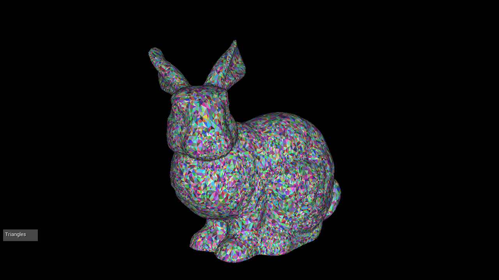
Triangles mode. Open image at full size.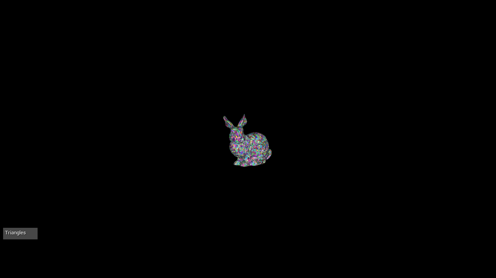
The same hierarchy makes geometry demand-paged
Once a coarse representation can stand in for finer geometry, the finer data no longer has to stay resident for the object to remain drawable. The engine can keep a coarse version resident and request more detail when a view needs it. That is the virtual part of virtualized geometry: the asset's logical addressable representation is larger than the detail currently in GPU memory.
Storage is organized into pages, which are transfer and residency units holding encoded cluster data and associated information. A cluster is a geometry-processing unit; a page is a memory-management unit, and confusing the two produces bad accounting. One page can hold several clusters, so making one desired cluster available may load data that shares its page. Current shared constants reserve 32 KiB for root GPU pages and 128 KiB for streaming GPU pages. Those are GPU page sizes in this source revision, not a prediction of compressed disk size. The definitions distinguish them.
Encoding the page is part of the design, not a separate final compression step. Vertex positions can be quantized onto a grid: store integers plus the information needed to reconstruct positions at a chosen precision instead of unrestricted floating-point values. A cluster whose coordinates occupy a small range can use fewer bits for that range. Clusters that meet at a boundary must still reconstruct compatible positions; incompatible rounding rules for the same point could reopen cracks that simplification avoided. The current uniform-grid position quantization makes the precision decision explicit.
Other attributes carry different kinds of redundancy. A unit-length normal lies on a sphere, so three unconstrained floating-point numbers spend more information than the direction needs. Octahedral encoding maps that direction to a compact two-dimensional representation, and the current normal encoding routines quantize its coordinates. Texture coordinates, material information, and triangle connectivity require their own encodings because their semantics differ. Reducing bytes is therefore a set of field-specific choices with separate quality and decoding costs, not one generic compression ratio applied to a raw vertex buffer.
The storage-friendly page and the GPU-consumable page need not share a layout. Transcoding converts the streamed representation into the form runtime decoding expects. Unreal's page uploader declares GPU transcode work with independent and parent-dependent passes, so some decoding work relies on related information being available. When estimating memory and bandwidth, distinguish source asset size, cooked disk data, staging transfers, resident encoded GPU pages, and temporary decoding or installation work. A reduction in one number does not necessarily imply the same reduction in the others.
Imagine approaching the far wall. The GPU visits the hierarchy, finds that the resident coarse cut is no longer detailed enough, and emits requests for finer pages. The CPU-side streaming manager receives that feedback, schedules reads, prepares data, installs ready pages, and updates references for later traversal. The current frame cannot wait for an arbitrary storage request, so it keeps drawing a valid resident representation while the requested detail is in flight.
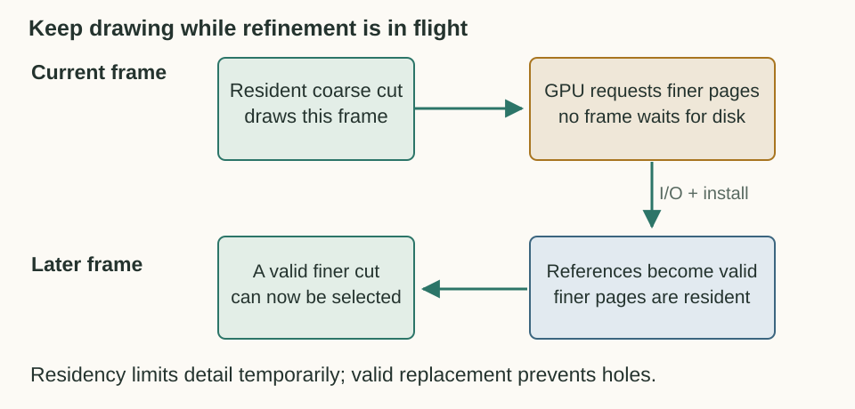
Page installation is more than copying a byte range. Encoded hierarchy references and cluster dependencies must become valid together. A pointer into an evicted page cannot remain available to traversal, and newly installed descendants cannot be selected before the required dependency information is consistent. Unreal's streaming manager therefore keeps pending-page queues, installation work, root-page accounting, and hierarchy updates. The streaming configuration and initialization show bounded pending requests and per-update installation limits rather than an operation that loads everything requested.
In the inspected initialization, the streaming pool is 512 MiB, maximum pending pages is 128, and maximum page installations per frame is 128. Treat those as default controls in this checkout, not universal project settings. More memory can reduce eviction and reload traffic, but it cannot fix an asset with pathological geometry distribution. A larger installation allowance can help a fast camera catch up, though it concentrates decompression, upload, and update work into fewer frames.
Residency constraints and visual error constraints are related but not identical. The ideal cut for a view describes the detail the picture would benefit from; the available cut describes what can be selected safely from installed data. A camera teleport can separate the two sharply. The user then sees detail refine over time while rendering stays stable. A poorly built hierarchy or mishandled dependencies produce a different failure: holes. Late refinement points to residency pressure; holes point to a build or dependency fault.
Nanite streaming also differs from Unreal's fallback mesh. A coarser resident Nanite representation belongs to Nanite's own hierarchy. A fallback mesh is an alternate conventional geometry representation for consumers or platforms that do not use the full Nanite path, and hardware ray tracing may intersect it while the camera displays Nanite clusters. Both mechanisms are necessary, but calling them both “fallback LOD” hides that they belong to different rendering systems.
A useful test is a deliberately slow storage path. Move the camera quickly while constraining page installs and check that the object stays geometrically complete. Repeat the test with a larger memory budget to separate bandwidth pressure from residency pressure. A screenshot taken after everything loads will not reveal this; watch the object stay coherent and geometrically complete while its physical storage changes.
Let the GPU remove work before rasterization
A high-detail representation is affordable only if most of it is rejected before expensive processing. The GPU starts with instances and their bounds. The camera's view volume, or frustum, defines which regions can project into the image, and an instance entirely outside that volume is discarded. Traversal then descends through bounds for surviving instances until it reaches the visible clusters. This coarse-to-fine rejection scales with hierarchy work rather than with every triangle in every asset.
A bound only works if it contains all the geometry that can contribute. If a box claims to contain waving leaves but the material displaces them outside it, a correct culler can reject geometry the player should see. If the box is excessively inflated, correctness survives but far less work is removed. Deformation therefore adds a culling cost before any displaced vertex is evaluated, which is why vertex animation cannot be added to a static renderer by changing only the vertex shader.
Occlusion offers another saving. A stone arch may hide most of the courtyard behind it. After rendering depth, the renderer can build a hierarchical depth buffer, usually abbreviated HZB, whose levels summarize larger screen regions. A projected bound can be tested against a suitably coarse level; if the depth information conservatively proves that the bound lies behind visible surfaces, the enclosed geometry need not be rasterized.
A conservative test can fail in either direction. A falsely visible cluster wastes time; a falsely occluded one disappears. The depth summary and comparison must respect the engine's depth convention and test the entire projected bound, not just its center against one unrelated sample.
Unreal commonly uses reversed depth, so “smaller always means nearer” is especially misleading. The culling shaders keep the appropriate depth tests together instead of scattering informal comparisons across materials.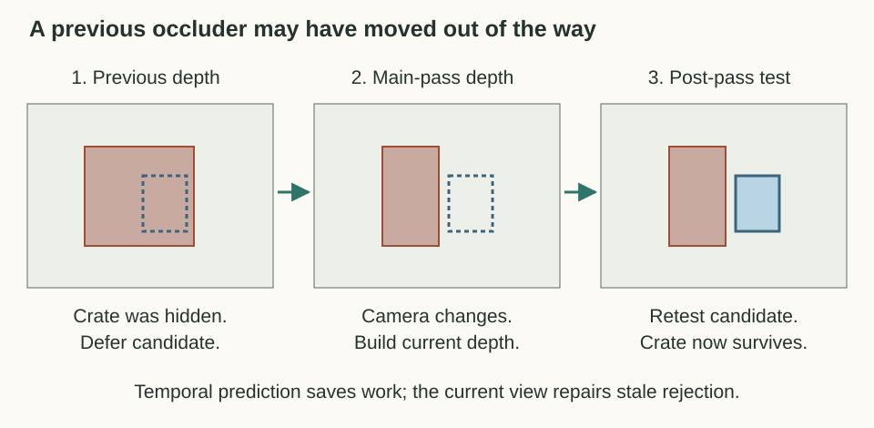
Last frame's depth alone would be dangerous. When the camera steps sideways, a previously hidden crate can become visible. Nanite's two-pass occlusion uses previous information for an efficient main pass, then retests occluded candidates against updated depth in a post pass. In this checkout, r.Nanite.Culling.TwoPass initializes to one. The C++ control and the main/post branches of instance culling expose the recovery mechanism. Disabling the feature for diagnosis does not prove that history-based rejection is always safe.
The survivor list is produced on the GPU, so the CPU does not read back visibility just to issue one draw per visible cluster. Counters and indirect argument buffers describe the work instead, and an indirect dispatch or draw takes its dimensions from GPU-written memory. The command stream and CPU-side orchestration remain, but fine-grained decisions stay next to the data that produced them.
Occlusion has limits. Dense foliage contains many holes, and a coarse depth summary often cannot prove that anything behind it is fully hidden. Layers of leaves may survive culling even when the final image looks like a compact green mass, so overlapping surfaces and distant disconnected details can remain expensive. Nanite reduces the penalty of tiny triangles but still has to process competing visible candidates before deciding which sample wins.
One useful comparison is a courtyard wall and a hedge of similar final screen area and material complexity. The solid wall should allow stronger rejection of hidden interior detail and geometry behind it. The hedge may keep producing raster work because holes and layered coverage prevent conservative elimination. A slower hedge would not contradict the pixel-based motivation; it would identify a case where resolving the pixels still requires many candidate surfaces.
Move an occluder and invalidate the previous depth
LOD answers which approximation could be sufficient. Occlusion asks whether that approximation can contribute any visible sample. To isolate the second question, the experiment freezes the 20,071-triangle cut selected at distance 64 and moves the raster camera back to distance 2 without selecting LOD again. The bunny now fills a substantial part of the image, so it is no longer the 122-sample footprint measured in the distant sweep. The frozen cut is not claimed to meet the original one-pixel error threshold at the closer camera; it lets the test change only occlusion while geometry stays fixed.
A foreground plane covers the left side of that enlarged view. In the previous frame it spans 350 columns; in the current frame only 245. The newly exposed strip is a disocclusion, a region where the last frame's evidence is insufficient for the current image. All main-pass, post-pass, and unculled reference images use the same frozen cut and distance-2 camera.
The laboratory uses positive camera-space depth, with smaller values nearer and positive infinity for an empty sample. Each parent depth texel is the maximum of its four children. The maximum is conservative: a candidate entirely behind the farthest already-visible surface over its projected rectangle is hidden everywhere in that rectangle. If even one child is empty, the parent's maximum is infinity, so that parent cannot prove occlusion. Using the nearest depth instead would let a single foreground sample hide unrelated empty samples beside it.
LaTeX source
D_{\ell+1}(i,j)=\max_{a,b\in\{0,1\}}D_\ell(2i+a,2j+b).LaTeX source
z_{\rm nearest}(C)>\max_{q\in R(C)}D(q)
\quad\Longrightarrow\quad C\text{ is occluded over its projected rectangle.}The rectangle must enclose the whole projected cluster, and must be a lower bound on its depth. The experiment uses transformed cluster vertices to build those conservative values, chooses a mip from the rectangle size, and reads every overlapping mip texel. Fetching one convenient center texel would not prove the implication. Unreal uses reversed depth conventions in relevant rendering paths, so the reduction/comparison directions cannot be copied mechanically from this positive-depth example.
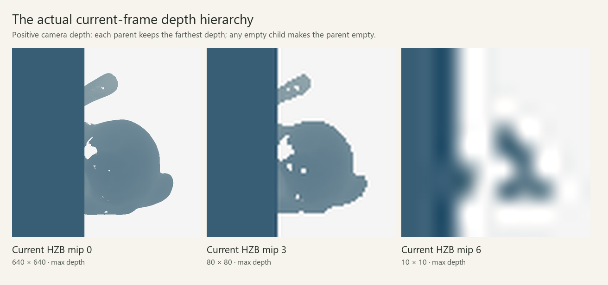
The experiment tests clusters against the previous depth pyramid, renders the apparent survivors into current depth, and then tests the rejected candidates against that current evidence. It starts with 510 bounded clusters: history defers 361, the main pass draws 149, and the post pass recovers 140. Before recovery, 2,520 sample depths differ from an unculled reference; after recovery, zero differ within the stated floating-point comparison tolerance. Recovery does not necessarily leave obvious empty holes, because a missing front surface may reveal a back surface, producing plausible coverage with incorrect depth and shading.
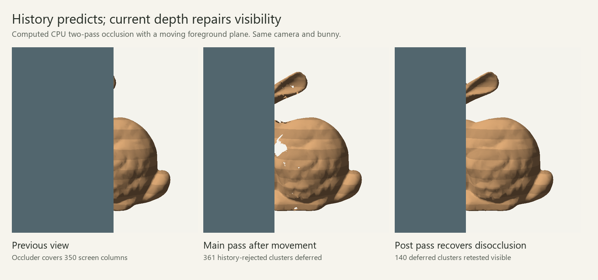
Unreal's main and post-pass culling performs the corresponding temporal recovery in its GPU architecture, combining visibility flags, previous and current view information, instance data, and hierarchy traversal instead of submitting every cluster from the CPU. Its instance-culling branches show the distinction. The first useful correctness test for Arda is the one used here: move the camera or occluder, enable previous-depth prediction, and compare against a current-frame unculled reference. GPU counters should then separate candidates, history rejects, post-pass survivors, and final raster work.
Rasterize identity first, then recover the surface
After selection and culling, the remaining cluster still contains triangles whose screen coverage must be resolved. GPUs have dedicated hardware rasterizers, yet Nanite also contains a software rasterizer implemented with compute shaders. Triangle size explains the duplication. Fixed-function hardware is very effective for sufficiently large triangles, but setup and pixel execution can become inefficient for huge numbers of tiny triangles. A compute path can distribute that work differently.
Software here means shader instructions running on the GPU, not a CPU drawing pixels one at a time. Nanite routes suitable geometry to hardware or compute rasterization, and both paths contribute compatible visibility information. The choice depends on projected size and supported behavior; it is a scheduling decision, not an artistic property of the mesh. In cluster selection, hardware-raster preference is calculated alongside the LOD test, while the raster controls expose separate thresholds and the compute-rasterization switch.
Traditional opaque rendering often evaluates material properties as a fragment survives rasterization. A visibility-buffer design separates the primitive that won from the properties it carries. The visibility result stores enough identity to retrieve the winning triangle and the instance that placed it, while depth establishes ordering. Later work decodes geometry, reconstructs attributes, and evaluates the material for the visible surface. The visibility buffer is an address into scene data, not a shaded photograph.
Consider one pixel on the crate. Several wall, crate, and leaf triangles may cover it. Each candidate has a depth and an identity, and the depth test chooses the nearest applicable surface. If the crate wins, later shading needs its triangle vertices, its instance transform, and the material assigned to that triangle. Storing only the crate's base color would lose texture coordinates, material identity, and the information needed for richer evaluation; storing every property before resolving visibility would spend bandwidth and shading work on losing surfaces.
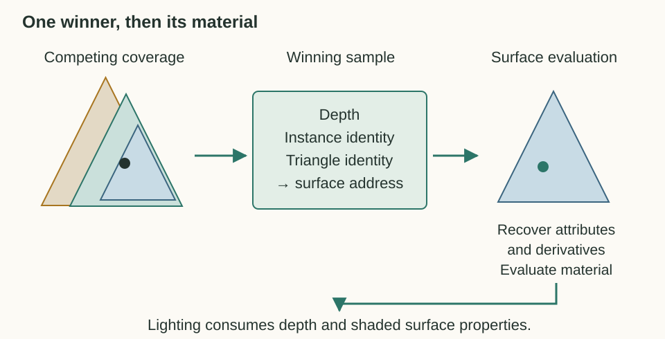
The inspected implementation includes a 64-bit visibility path whose pixel write packs an identity with depth and uses an atomic operation to select the winner. The exact packing and reversed-depth comparison are implementation details that producers and consumers must share. The pixel-write shader makes that contract concrete. The 64-bit write does not license a universal bit allocation in a new engine: platform capabilities and Nanite representations have changed, even though the logical requirement remains a consistent depth-and-identity result.
Reconstructing a point on a triangle introduces barycentric coordinates. For triangle vertices A, B, and C, weights a, b, and c sum to one and describe a point as aA + bB + cC. The same interpolation applies to texture coordinates and other vertex attributes, with perspective correction where needed. A visible sample near A gives A a larger weight. The weights are not texture coordinates; they are the recipe for obtaining the texture coordinates associated with that triangle's surface.
Texture filtering also needs to know how those coordinates change across the image. A pixel shader traditionally gets derivatives from nearby shader lanes arranged in screen-space quads. A compute material pass with reordered work cannot assume that adjacent threads shade adjacent pixels of the same triangle. Analytic or explicitly reconstructed derivatives preserve the intended texture footprint; without them, the geometry can be perfectly visible while textures shimmer or choose incorrect mip levels. Unreal's barycentric helper implementation and Nanite attribute interpolation show why recovering a surface involves more than loading three positions.
The visibility result then joins the rest of the opaque renderer through depth and material outputs, so Nanite meshes and conventional meshes can coexist in one image. A game can render the stone wall with Nanite, a supported character path with its own deformation system, and translucent glass through another pass. Later stages only need a shared contract; every object does not need the same triangle submission mechanism.
Follow one pixel from edge equations to lighting
After selection and culling, rasterization must answer coverage and depth. The reconstruction experiment freezes the distance-64 cut again and renders it from distance 2 without the foreground occluder. The closer camera exposes enough pixels to inspect interpolation; it does not revalidate the coarse cut against a one-pixel LOD target at distance 2. For two projected vertices , define the signed edge function . It is zero on the edge and has opposite signs on opposite sides. For consistently oriented triangle vertices , divide the three opposite-edge values by the signed triangle area to obtain screen-space barycentric coordinates. A sample is inside when all three coordinates are nonnegative:
LaTeX source
\lambda_0=\frac{E_{bc}(p)}{E_{bc}(a)},\qquad
\lambda_1=\frac{E_{ca}(p)}{E_{ca}(b)},\qquad
\lambda_2=1-\lambda_0-\lambda_1.The CPU rasterizer evaluates these functions at pixel centers inside each triangle's integer bounding box. It handles either winding and skips near-plane-intersecting triangles because the experiment places all rendered geometry safely in front of the camera. Shared-edge samples count for both incident triangles, while a production rasterizer needs a consistent top-left ownership rule and fixed-point precision policy. The lab resolves equal-depth ties deterministically by traversal order. These are explicitly limited raster conventions, not a claim of bit-identical hardware coverage.
Screen-space weights cannot directly interpolate an arbitrary world-space attribute under perspective. To derive the correction, start from a point's pre-division homogeneous combination. If its original barycentric coordinates are and clip-space vertex denominators are , projection yields screen weights proportional to . Solve that relationship for , then normalize so the coordinates sum to one:
LaTeX source
\lambda_i=\frac{\beta_iw_i}{\sum_j\beta_jw_j}
\quad\Longrightarrow\quad
\beta_i=\frac{\lambda_i/w_i}{\sum_j\lambda_j/w_j}.LaTeX source
a(p)=\sum_i\beta_i a_i
=\frac{\sum_i\lambda_i a_i/w_i}{\sum_i\lambda_i/w_i}.In this camera convention . Therefore camera-space depth is . The nearest candidate stores both this depth and the triangle's integer identity. The second pass fetches the triangle vertices and reconstructs position, normals, and material inputs using the corrected weights. The lab saves the resulting depth, triangle-ID, barycentric, and overdraw arrays in its local cache so the visible image can be investigated numerically.
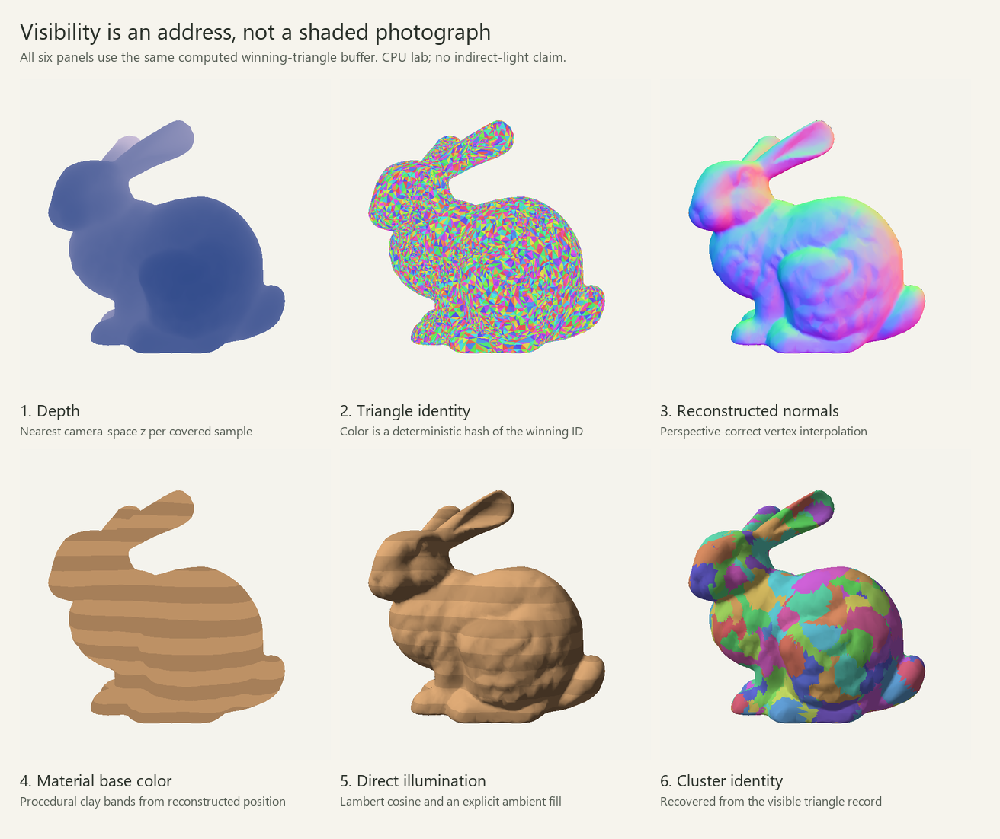
At the recorded sample , two triangles cover it and triangle 18,455 wins. Its fetched vertex indices are 13,677, 13,676, and 13,678. The perspective-correct weights are approximately , giving camera depth 1.651528 and local position . The values come from the reconstructed bunny, not from a synthetic triangle added for illustration. Across visible samples, the largest measured error in the barycentric sum is in the CPU's floating-point calculation.
Unreal's visibility identity includes the selected instance/cluster context needed to decode the triangle. FVisibleCluster supplies view, instance, physical page and cluster indices, flags, assembly transform, and depth-bucket information, with virtual-shadow page coordinates for the relevant path. Its definition shows why a bare mesh-local triangle index is insufficient for a real scene. The 64-bit visibility write packs identity with depth and uses an atomic maximum in the supported shader path. The lab's sequential positive-depth minimum has the same logical purpose but a different representation and concurrency model.
What FVisibleCluster contributes to raster work
| Fields | Information recovered |
|---|---|
ViewId, InstanceId, AssemblyTransformIndex | Which view and placed geometry instance this selected work belongs to. |
PageIndex, ClusterIndex | Where the selected cluster can be decoded from resident geometry storage. |
Flags, DepthBucket | Path-specific selection/raster state and depth scheduling information. |
vPage, vPageEnd | Virtual page range for the associated virtual-shadow rendering path; not ordinary material UV coordinates. |
Texture derivatives require another calculation. Write an interpolated UV component as , where and . Since the edge functions are affine in screen position, their derivatives are constant within the triangle. Apply the quotient rule:
LaTeX source
\frac{\partial u}{\partial x}
=\frac{(\partial_xN)D-N(\partial_xD)}{D^2},\qquad
\partial_xN=\sum_i(\partial_x\lambda_i)u_i/w_i.The same expression gives , and repeating it for supplies the texture footprint. A compute material pass therefore cannot assume its neighboring threads automatically form useful pixel quads. Unreal's barycentric helpers explicitly compute values and derivatives. Our clay bands depend on reconstructed position rather than a texture, but a textured extension should add derivative validation before judging its filtering quality.
Finally evaluate illumination. The lab uses an authored base color , a directional light, a Lambertian cosine, and an explicitly chosen small fill term. A Lambertian BRDF is , because integrating over a hemisphere gives :
LaTeX source
\int_{\Omega^+}\cos\theta\,d\omega
=\int_0^{2\pi}\!\int_0^{\pi/2}\cos\theta\sin\theta\,d\theta\,d\phi
=2\pi\left[\tfrac12\sin^2\theta\right]_0^{\pi/2}=\pi.For the chosen light irradiance , the direct term becomes . The added is a display fill, not simulated global illumination. A gamma approximation is applied only for the output image. In Unreal the reconstructed material writes or supplies the surface quantities used by the renderer's lighting paths; Nanite visibility does not itself solve shadowing or indirect transport. Changing how geometry becomes visible should leave lighting in its own stage, not move an entire lighting model into the cluster record.
Separate raster work from shading work in the engine
Nanite's raster-mode, raster-bin and shading-bin views expose three different decisions. Raster mode concerns how visibility work is processed. A raster bin groups compatible raster behavior, which can include coverage and deformation requirements. A shading bin organizes subsequent material work for visible surfaces. One uniform bunny material keeps this example simple, so a single dominant bin is expected rather than a sign that the screenshot is missing complexity.
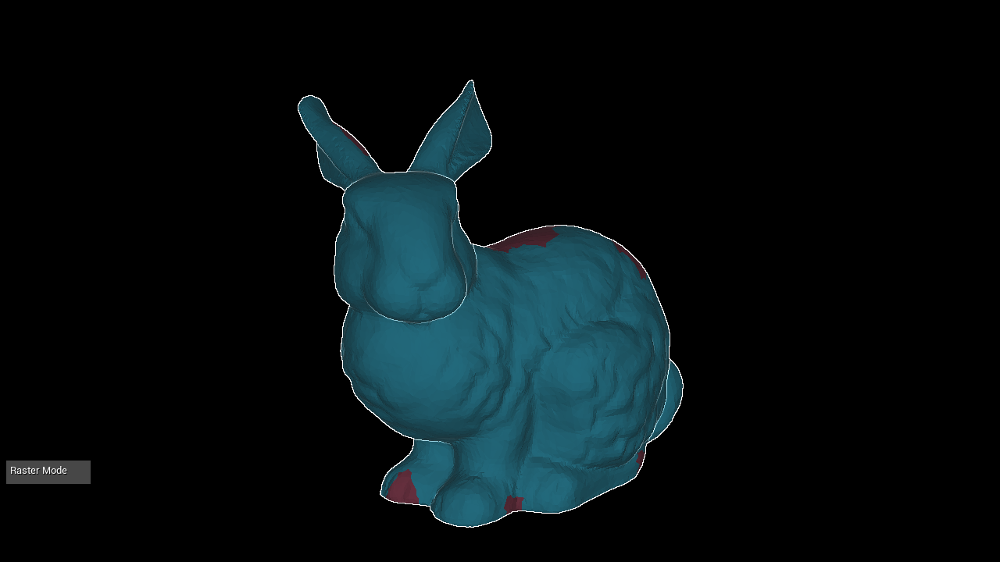
RasterMode. Use the diagnostic legend and engine source for its color meaning; the colors are not a universal hardware-versus-compute convention. Open image at full size.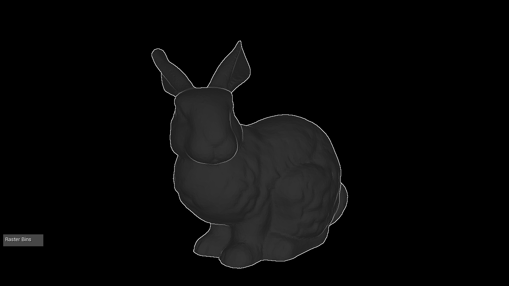
RasterBins. Geometry visibility and programmable raster behavior organize this work. Open image at full size.ShadingBins. Material evaluation is organized after visibility; it is not another LOD hierarchy. Open image at full size.The lit capture evaluates material and lighting on the resolved geometry. Nanite supplies the identity of visible surfaces, the material supplies their surface properties, and lighting computes reflected radiance. Not every material or light evaluation runs in the Nanite cluster-culling shader; the visibility-buffer reconstruction derived in the lab keeps these phases connected while they use different work organizations.
Materials can change coverage before shading
The visibility-first explanation can look as if triangle positions and coverage are known in advance. A stone material largely fits that assumption; a leaf material may not. It can move vertices with World Position Offset (WPO) and discard samples through an opacity mask. The renderer must execute those parts of the material before it can decide which surface is visible. Evaluating the leaf's color afterward cannot repair a visibility decision made from the undeformed rectangle.
Material work is grouped for two different reasons. A raster bin groups compatible behavior needed to establish geometry and coverage, while a shading bin groups the material evaluation performed for visible samples. Two materials can share raster behavior and still shade differently. An instance with WPO disabled may take a cheaper raster path even though its surface appearance uses the same material family. Treating a bin as simply “one material” loses those distinctions.
The original 2021 Nanite design presentation describes a much more restricted rasterization context than the contemporary engine. Epic's later Fortnite work introduced programmable rasterization to production content, including masked and vertex-deformed surfaces. The two historical images below come from Epic's 2023 article about UE5.1, not from the local 5.8.1 build. They show the same scene under ordinary appearance and under a raster-work classification.
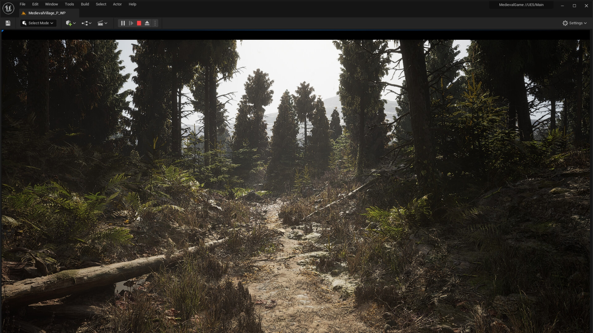
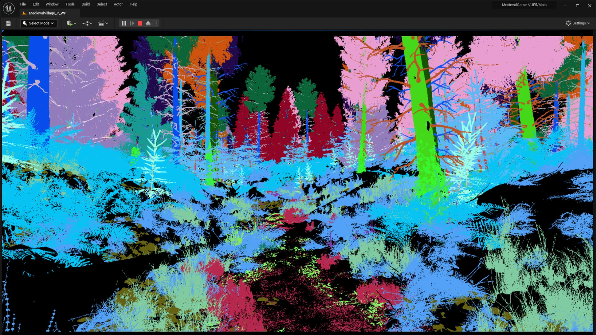
The current source initializes compute rasterization, programmable rasterization, and a runtime tessellation control to enabled. Asset, material, platform, and project support still determine whether a particular mesh uses tessellation. A global enable does not guarantee that a mesh tessellates. Read the current controls together with shader permutations and mesh capability checks rather than as a checklist of universally available behavior.
WPO also constrains deferred shading. Visible attributes reconstructed later must match the deformed surface used for visibility. Depth, triangle identity, interpolation, and any required current or previous deformation must agree. If the visibility pass bends the leaf but later code reconstructs attributes from an incompatible position, normal mapping, motion, and lighting can detach from the geometry. Supporting deformation consistently is an obligation across passes.
For masked leaves, the opacity test may need texture access before a winner is known. A dense stack of leaves can therefore run material-dependent work for several candidates that eventually lose. Visibility-first shading removes much wasted full surface shading, but it cannot defer a calculation that visibility itself requires. Replacing alpha-cutout cards with carefully authored opaque leaf geometry can therefore produce a different performance profile even when the opaque geometry has more triangles.
After visibility, the current Nanite shading implementation builds bin and dispatch data for the material work. Its output supplies the opaque renderer with surface quantities such as normal, base response, roughness, and other shading-model data. A deferred renderer stores those quantities in geometry buffers, usually shortened to GBuffer, so lights can be evaluated later without rerunning the complete authored material graph for every light. The separate material graph compilation article explains how one authored graph becomes these different executable contexts. Visibility and surface evaluation ask different subsets of that graph to run.
Transparency needs a separate treatment. The one-winning-surface model works well for opaque and masked coverage, but glass transmits light through multiple surfaces and cannot generally be reduced to a single opaque depth winner. This engine contains evolving Nanite translucency code; its presence does not make every blend mode or lighting path equivalent to opaque Nanite. For a real project, validate the mesh, material blend mode, platform, and chosen translucency path together. The courtyard's glass belongs to transport and compositing, not to opaque visibility.
Selecting existing detail and generating displacement
The scan already contains geometric detail, and a coarser replacement discards some of it when the view can tolerate the loss. Tessellation followed by displacement addresses a different problem: a base triangle may not have enough sample points to represent a varying material-defined surface. Moving only its three existing vertices cannot create an interior bump whose displacement is zero at all three corners, so the geometry must be subdivided before the displacement field is evaluated.
A separate computed patch makes the failure visible. Its displacement is . All panels use the same analytic function, camera, and amplitude. Only the number of grid subdivisions changes. The 2-by-2 grid yields eight triangles; the 16-by-16 grid yields 512; the 64-by-64 grid yields 8,192. This is a CPU displacement experiment, not displaced Stanford geometry and not an Unreal Nanite tessellation capture.
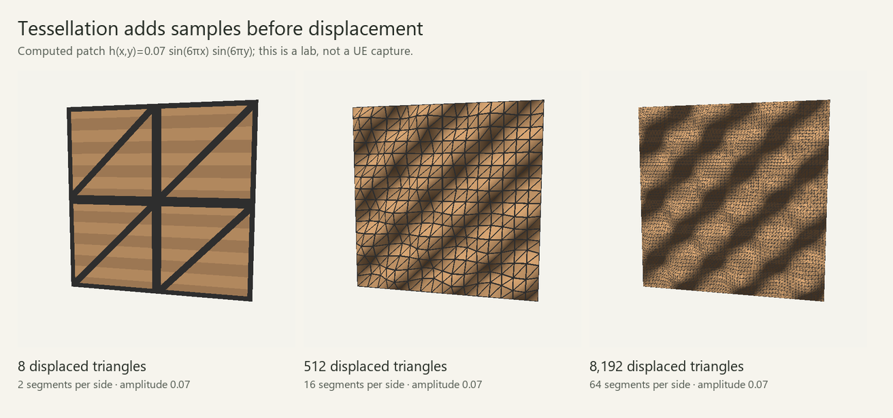
The subdivision count can follow an elementary sampling bound along an edge. Parameterize the edge by length coordinate . If the scalar displacement has bounded second derivative , the linear-interpolation remainder on a segment of length is . The product's maximum absolute value is , attained at the midpoint. Thus
LaTeX source
\|h-Ih\|_\infty\leq\frac{M\Delta^2}{8}.LaTeX source
\frac{M(L/n)^2}{8}\leq\varepsilon
\quad\Longrightarrow\quad
n\geq L\sqrt{\frac{M}{8\varepsilon}}.For a one-dimensional sinusoid , . Large amplitude and high frequency therefore require more geometric samples. The result is edge-wise and scalar, not a complete two-dimensional displacement proof: a surface patch needs bounds over its interior, a normal field can also vary, and a texture-derived displacement may not provide a convenient analytic curvature bound. Still, it isolates the quantities that drive sampling: spatial frequency, amplitude, and acceptable geometric error.
Unreal's tessellation code uses projected edge scales, view LOD scale, dicing rate, distance-related behavior, and table-driven tessellation patterns. GetTessFactors computes factors before FTessellatedPatch rounds/clamps and decodes an appropriate pattern. It does not implement the sinusoidal curvature formula above. The derivation gives a small implementer's model for why sampling is necessary; the engine code gives the actual runtime mechanism and its parameters.
What FTessellatedPatch provides
| Information | Representation in this shader | Use |
|---|---|---|
| Pattern storage address | TableOffset | Find the selected tessellation pattern in the shared table. |
| Pattern and output sizes | Pattern_NumVerts_NumTris | Decode the chosen pattern and bounded vertex/triangle counts. |
| Domain locations and connectivity | Table loads of encoded barycentric vertices and packed triangle indices. | Generate sample points on the original patch and connect the resulting microtriangles. |
Shared edges must select compatible samples, just as LOD boundaries must remain compatible. Displacement must also expand culling bounds by its actual permitted range, or the renderer can correctly cull the undisplaced bound while the displaced surface ought to be visible. Material compilation, raster-bin selection, patch generation, visibility, and material evaluation therefore share a real interface. The geometry system needs to know which material behavior affects coverage or position without taking ownership of every later lighting calculation. Changing the dicing-rate default is a tuning change; changing this interface alters what the geometry system can represent.
Actually displace and tessellate the Nanite asset
The engine experiment swaps the bunny's material for a compiled displacement material. Its normalized displacement is 0.5 + 0.5 sin(2π x / 20 cm), driven by world position with no material offsets. A magnitude of 2 cm and a center of 0.5 give a displacement range of −1 to +1 cm along the normal. The native editor bridge connects the displacement material property explicitly, because this engine's Python enum does not expose that pin. The capture checks that the material compiled instead of accepting a default-material fallback.
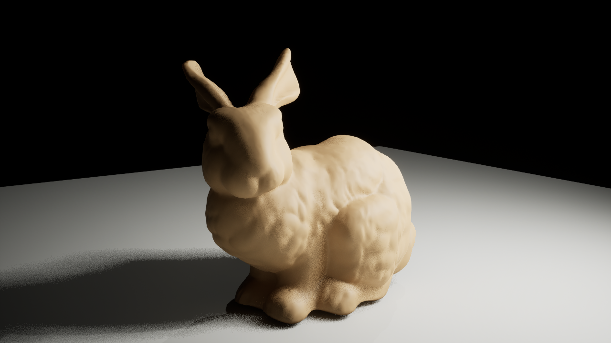
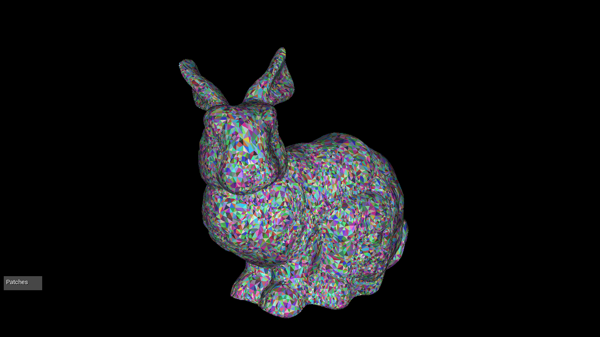
Patches visualization of the tessellation path. Open image at full size.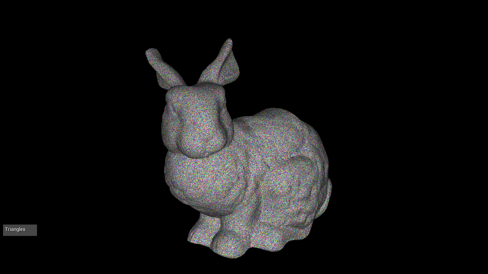
Build-time simplification and runtime tessellation cover different parts of the shape. The hierarchy selects a representation of the source shape. Runtime displacement evaluates additional shape variation at a sampling density set by the view and tessellation policy. Bounds, raster bins, and material compilation must agree about that variation, and turning on a tessellation switch without a compiled displacement path is a different experiment.
Visibility from the light’s point of view
Direct lighting asks how much light reaches a visible surface from a light source. For a simple point-like light, the answer depends partly on whether an occluder lies between light and surface. A shadow map renders depth from the light's viewpoint, then transforms the receiver into that view during lighting and compares its depth with the stored nearest depth. The shadow-map view has its own projection and sampling resolution; it is not the camera image reused from another angle.
Virtual Shadow Maps divide that depth representation into pages, so only needed regions consume physical storage and rendering work. The logical shadow resolution can be large while the physically mapped pages are demand-driven. Nanite helps render requested pages because it can choose and cull geometry for shadow views at fine granularity, but the two systems own different pages: a Nanite geometry page contains geometry, and a shadow page contains light-view depth.
Suppose the main camera sees the sunlit side of the crate while a lamp lights the other side. Geometry invisible to the camera may still cast the crate's shadow on the wall, so the camera's cluster survivor list cannot serve as the complete shadow caster list. The light's views need their own visibility and detail decisions. Likewise, a cluster that covers many camera pixels may cover very few shadow samples; reusing camera detail everywhere can overspend badly.
Shadow caching relies on another kind of coherence. If a light and its occluders stay unchanged, a rendered page can remain useful across frames. If the crate moves, affected pages must be invalidated and redrawn. If every leaf moves continuously through WPO, some shadow pages lose much of that reuse. The extra expense comes from the cached work that animation invalidates as well as from the vertex animation itself.
The current Virtual Shadow Map cache controls include explicit deformable-mesh invalidation behavior. Nanite also has an experimental r.Nanite.VSMInvalidateOnLODDelta control initialized to zero in this checkout. It addresses geometry streaming: a shadow page rendered before the desired detail arrives can otherwise keep an older geometric approximation. The source warns that invalidation increases when streaming struggles. Newly available detail can therefore invalidate a cached result even when no gameplay transform changed.
A directional sun adds a scale problem. Nearby contact shadows need much finer spatial detail than a distant hillside, so spatially varying shadow regions and resolutions let the renderer put precision near the camera and less of it farther away. Local lights bring their own projection and coverage challenges. A frame may involve many light views, mapped page regions, cache states, and invalidation decisions; “Nanite draws the shadow once” describes none of that.
Three changes in the courtyard should be measured separately. Move the camera while the sun, crate, and tree stay still, which changes demanded shadow coverage. Move the crate while the camera stays still, which changes occluder content. Turn on wind animation for the tree, which introduces continuous deformation and potentially continuous invalidation. Capturing each case separately shows whether cost comes from demand, updates, or raster work. A single average frame time over all three motions hides that distinction.
Direct shadows do not explain the warm light reflected from the crate onto nearby stone, or the bluish light in a region that sees sky but not the sun. Those cases need light arriving through directions other than a direct connection to one explicit light. That problem leads from Nanite's geometry visibility machinery to the transport approximations organized by Lumen.
Reproducing the bunny experiment and extending the renderer
The complete downloadable laboratory source lives in Scripts/Docs/unreal_articles/labs/nanite/. download.py retrieves and hashes the Stanford archive, reads the named PLY member, records attribution, and exports the normalized Unreal OBJ. run.py builds the adjacency partition and replacement hierarchy, renders every figure, and writes the measurement record. Its dependency versions are pinned in requirements.txt. The downloaded model, virtual environment, intermediate arrays, and cached hierarchy remain ignored; published figures and metrics are the reviewable output.
python -m venv .venv
.venv\Scripts\python -m pip install -r requirements.txt
.venv\Scripts\python download.py
.venv\Scripts\python test_simplify.py
.venv\Scripts\python run.py --rebuildRun those commands from the laboratory directory. A repeat without --rebuild reuses the locally generated hierarchy and rerenders the figures. The cache is a development convenience, not a versioned asset format, so delete or rebuild it after changing construction code. The checked-in provenance contains archive and source-mesh hashes, so a different network response does not silently become a different experiment. Figures are deterministic for the specified inputs and implementation; dependency and platform details still matter for floating-point reproducibility.
Tests follow the same ownership boundaries. Construction checks that every source triangle enters exactly one leaf, every cluster fits its capacity, locked positions and exterior edges survive reduction, and parent envelopes do not understate child envelopes. Selection checks exact leaf coverage for every camera cut. Rasterization checks positive depths and normalized barycentrics. Temporal culling compares the final depth image with an unculled current-frame reference. A screenshot inspection adds evidence but cannot replace the checks.
The checks also show what remains unproved. The experiment does not validate arbitrary nonmanifold imports, UV or normal seams, quantized decoding, missing stream pages, near-plane clipping, GPU races, masked materials, deformation, or production tessellation. It does not measure GPU frame time. A 128-triangle capacity is the same numerical limit used in one Nanite path, but sharing that number is not evidence that the CPU lab has Nanite's performance or complete behavior. The deliberate errors and limitations remain part of the result and set the next implementation milestone.
For Arda, begin by giving the asset builder an explicit output contract: independently decodable geometry blocks, conservative bounds, well-defined errors, coherent replacement relationships, material association, and residency dependencies. Give the runtime a separate view input and output list of selected resident work. Let visibility reference stable geometry and instance identities. Let the material evaluator reconstruct the surface behind that identity. Put tests at each transition, so a change to packing cannot silently alter LOD, and a change to shading cannot silently alter which geometry exists.
The next improvement should address the weakest measured component: the pessimistic correspondence envelope and constrained tree, as the distant-bunny triangle counts show. A stronger geometric error metric, better group partitioning, and a carefully validated DAG cut should reduce work without losing coverage. GPU traversal, compressed streaming, and dual hardware/compute rasterization can then be added on that understood contract.
Turn the experiment into a GPU renderer
The bunny is now immutable geometry, replacement dependencies, error metadata, and a stream of view-dependent work. Turning the experiment into a renderer means making those lifetimes explicit. The asset builder may spend seconds optimizing a partition, while a traversal shader needs compact records and bounded work. A material pass needs enough information to reconstruct a surface without repeating the traversal, and a streaming manager needs to replace physical storage while references remain valid. The CPU experiment made the geometry decisions inspectable; these contracts make the same decisions practical at runtime.
Start with an offline format independent of your in-memory C++ structs. Write a versioned header, bounds and error records, group dependency records, encoded cluster payloads, and page dependency information. Check every offset and count when loading. A raw pointer in a builder object cannot be an address in an uploaded asset. Use asset-relative offsets or explicitly typed indices, and distinguish a logical page ID from a physical page allocation. This layout is proposed for Arda; it is not a serialization specification for Unreal's proprietary asset format.
The minimum records for a virtual-geometry implementation
| Record | Information it must provide | Lifetime and consumer |
|---|---|---|
| Geometry asset | Format version, root hierarchy range, material-section mapping, quantization decode parameters, logical page directory. | Shared across placements. Loading registers the asset; views never rewrite it. |
| Replacement group | Children and their jointly valid coarse replacement, enclosing bounds, simplification error and parent error, dependencies needed for a complete transition. | Built offline. Traversal must use the builder's compatibility rules. |
| Cluster | Vertex and triangle decode ranges, local bounds, material ranges, winding and attribute information, owning page. | Resident decoded or encoded data. Rasterization reconstructs its triangles. |
| Geometry instance | Asset handle, current and previous transforms, bounds expansion, material overrides, generation and deformation revision. | Persistent scene state. Different views share it but make independent selections. |
| View | Projection, viewport, clip planes, pixel-error policy, depth convention, HZB identity and compatible history. | One camera, shadow, or cache capture. A threshold belongs to a view. |
| Resident page map | Logical-to-physical translation, generation, dependency readiness, upload completion, and retirement fence. | Streaming state. A complete upload becomes visible atomically to consumers. |
| Visible-cluster record | Instance, cluster, view, raster-bin and deformation inputs sufficient to reconstruct one selected unit. | Frame-local append output. Indirect dispatch and visibility IDs refer to it. |
| Visibility sample | Winning depth plus a reconstructible triangle identity, or equivalent references into visible-cluster work. | Per pixel/sample. Material evaluation consumes it after visibility is resolved. |
Unreal divides these jobs across Nanite builder resources, renderer scene data, streaming management, hierarchy traversal, raster bins, and shading work; the source chapters above identify those implementations. Do not copy this table into a single giant mutable object: a geometry page should not contain a pointer to a frame's material work queue, a persistent instance should not store one permanent answer to “visible?”, and a page residency update should not silently change a cluster ID that a running frame still uses.
A first GPU implementation can retain the reference lab's replacement tree. Upload its records and compare every selected cut against the CPU result before adopting the more flexible DAG. Use a work queue whose entry is (instance, region, view). A thread tests a region; it either emits its coarse replacement or enqueues all required children. Reserve queue space with bounded atomics, record overflow, and retain a conservative fallback when capacity is exhausted. An overflowing queue that silently drops entries turns a performance problem into missing geometry.
// Reference TREE traversal. The production Nanite DAG has group dependencies.
push(instance, root_region, view)
while work remains:
item = pop()
if outside_frustum(conservative_world_bounds(item)): continue
if temporal_occlusion_rejects(item): defer_for_post_pass(item); continue
if coarse_error_is_acceptable(item) or children_are_not_fully_resident(item):
emit_all_clusters_of_replacement(item)
request_missing_child_pages_if_needed(item)
else:
enqueue_all_children(item)
// Only a complete replacement is emitted. No partial group transitions.Renaming “parent” does not turn this traversal into a DAG traversal. A graph node may participate in a shared replacement. The builder must store the exact group relationships and monotone error data that make the selection predicate consistent. The runtime must ensure the shared transition is selected once, with all required pieces. Establish the invariant first: every surface region has one compatible selected representation. Then design GPU scheduling around that invariant rather than using atomics to patch overlapping selections after the fact.
Page residency has to preserve that invariant as well. Before evicting a page, determine whether a resident coarser representation can cover all dependent regions and whether any in-flight frame still reads its physical allocation. Build the next page map, wait for transfer completion, publish it for a new frame, and retire old allocations behind a GPU fence. A memory barrier orders accesses; it does not prove that an asynchronous transfer has completed on another queue. A CPU reference count likewise does not establish that GPU work has stopped using a buffer.
For a first rasterizer, use hardware triangles and an integer visibility target. This already verifies hierarchy selection, instance transforms, identity reconstruction, and material evaluation. Add a software rasterizer after those contracts work. Assign small triangles to cooperative compute work, evaluate edge equations with a defined sample convention, and resolve depth and identity together. If depth wins but the stored ID belongs to a losing triangle, the later material pass shades the wrong surface. Packing or synchronization must make the winning pair coherent. The lab's sequential CPU depth test avoids that race; a parallel GPU implementation must solve it explicitly.
Hybrid rasterization adds another dependency. Hardware and software work may write the same logical visibility result. They need compatible clipping, depth range, tie-breaking, sample positions, and ownership rules. Treat near-plane clipping and nearly degenerate triangles as first-class cases. Start by comparing both paths on a deliberately tiny mesh with shared edges, then the bunny, and finally many overlapping instances. A convincing color image can hide incorrect primitive IDs at a silhouette; inspect the identity and depth buffers independently.
Material evaluation follows resolved visibility. Decode the winning triangle, transform its vertices, reconstruct perspective-correct attributes and derivatives, and then evaluate the appropriate material program. Grouping pixels by material improves coherence but does not eliminate the need for correct neighboring derivatives. A tiled or compute shading implementation must derive gradients from the triangle's interpolants rather than assume an arbitrary workgroup has the same quad layout as a pixel shader. Texture mip selection can otherwise flicker even when geometry selection is correct.
Programmable deformation belongs before the affected visibility decision. If displacement can move the surface outside its stored bounds, culling must see expanded or updated bounds. If masked material code rejects samples, coverage depends on that code and its textures. A shading-only color parameter can change after visibility; a parameter that changes opacity or displacement cannot be treated as the same kind of update. Keep separate revision categories for shading, coverage, geometry deformation, and bounds. That is why programmable rasterization is a larger change than adding a new material slot.
Expose the intermediate states as debug views from the beginning, so that each stage's output can be inspected. Display selected group IDs, hierarchy depth, missing pages, projected error, raster path, material bins, and history rejection reasons. Record counts alongside each image. When the bunny loses an ear, “Nanite is broken” is too broad to investigate. A missing-page overlay may identify incomplete residency; a selected-cut overlay can expose an invalid replacement. The depth view may show a clipping error, and the material-ID view can reveal a decode mismatch.
An implementation order with a check at each stage
Build the system in increments whose output can be checked independently. Begin with the original mesh and a conventional rasterizer. Confirm its winding, orientation, normalization, materials, and silhouette. Then construct leaf clusters without simplifying anything; concatenating their triangles must recover the source triangles exactly once. The first optimization should leave the image unchanged. That check catches partition and remapping errors before a simplifier can plausibly explain them as approximation.
Next introduce one constrained reduction. Test its exterior boundary position and connectivity, material seams, degeneracy handling, and measured error. Only then repeat the operation into a hierarchy. Select every legal coarse level in isolation, then mixed cuts, and verify coverage of leaf regions. The reference implementation's invariants accompany its generated metrics, so a figure is not the only evidence that the reduction executed correctly. A rendering that happens to look smooth is not proof that its hierarchy can support arbitrary compatible cuts.
Port traversal without streaming first. Compare selected region IDs against the CPU for identical cameras and thresholds. Introduce missing pages by deliberately withholding selected child pages, and verify that the image falls back to a complete coarser representation. Move the camera quickly and delay upload completion to exercise transitions. A useful experiment is to vary residency while fixing the camera: the selected representation may become coarser, but it must never acquire holes solely because a transfer has not finished.
Add occlusion last in the visibility sequence. First validate current-frame frustum rejection and depth against the unculled image. Then add a previous-frame HZB and the recovery pass demonstrated in the lab. Move the occluder, the camera, and the bunny separately. Count recovered regions and compare final depth with an unoccluded reference. Temporal occlusion saves work only if it preserves newly revealed geometry. A cache hit rate without a visibility-correctness check rewards the wrong behavior.
Performance measurement should separate build time, disk bytes, resident bytes, streaming requests, traversal work, selected clusters, submitted triangles, covered samples, overdraw, and material work. The number of triangles in the asset is useful provenance but a weak predictor of the frame cost. The CPU lab's execution time is likewise not a Nanite benchmark. The production GPU pipeline has different parallelism, compression, scheduling, and cache behavior. Use the lab's statistics to understand algorithmic work, and profile your own implementation on the target GPU before setting budgets.
The Arda module boundary follows from those contracts. Geometry building produces versioned virtual assets. Scene instances publish transforms and semantic revisions. Streaming publishes a resident mapping. A view-dependent visibility pipeline produces reconstructible surface identities, and material evaluation turns those identities into shading inputs. Shadows and material captures are additional clients with their own views and error policies. The boundary leaves room to extend the implementation while keeping every visible region coherently represented and every shaded sample traceable to the geometry that won visibility.
Source evidence and reproducibility
The worked examples cover the Unreal 5.8.1 code paths listed below. Each link identifies the inspected lines. The lab source includes their hashes so you can check that a local copy matches. The reduced examples cover only a subset of the engine paths.
- Engine/Shaders/Shared/NaniteDefinitions.h, lines 21–28
The inspected triangle path caps a cluster at 128 triangles and 256 vertices.
- Engine/Source/Developer/NaniteBuilder/Private/Cluster.h, lines 272–327
Builder FCluster stores geometry, external edges, bounds/errors, group relationships, and encoding work.
- Engine/Source/Developer/NaniteBuilder/Private/ClusterDAG.h, lines 33–47
FClusterGroup carries children, bounds, parent error, page-range association and mesh/assembly state.
- Engine/Source/Developer/NaniteBuilder/Private/ClusterDAG.cpp, lines 1375–1602
ReduceGroup merges children, simplifies, repartitions parents and propagates shared parent error.
- Engine/Source/Developer/NaniteBuilder/Private/Cluster.cpp, lines 965–1052
The builder supplies attribute weights, locks external edge positions, and configures the mesh simplifier.
- Engine/Source/Runtime/Engine/Public/Rendering/NaniteResources.h, lines 105–144
FPackedCluster groups geometry decoding, culling and material-access metadata into the GPU record.
- Engine/Shaders/Private/Nanite/NaniteClusterCulling.usf, lines 256–312
Hierarchy traversal and cluster draw eligibility use projected edge scales, stored errors and view/instance scale conventions.
- Engine/Shaders/Private/Nanite/NaniteDataDecode.ush, lines 171–188
FHierarchyNodeSlice exposes bounds, error interval, child/page references, loaded/enabled flags and deformation metadata.
- Engine/Source/Runtime/Engine/Public/Rendering/NaniteResources.h, lines 248–258
FPageStreamingState records storage sizes and offsets, dependencies, hierarchy depth and flags.
- Engine/Shaders/Private/Nanite/NaniteInstanceCulling.usf, lines 353–421
The instance-culling shader distinguishes previous-frame/main-pass occlusion from post-pass recovery.
- Engine/Shaders/Private/Nanite/NaniteDataDecode.ush, lines 48–60
FVisibleCluster identifies the view, instance, page and cluster, with raster flags, assembly and virtual-shadow metadata.
- Engine/Shaders/Private/Nanite/NaniteWritePixel.ush, lines 19–92
The supported 64-bit visibility path packs identity/depth and performs an atomic maximum.
- Engine/Shaders/Private/Barycentrics.ush, lines 60–101
Triangle reconstruction computes perspective-correct barycentric values and quotient-rule derivatives.
- Engine/Shaders/Private/Nanite/NaniteTessellation.ush, lines 61–143
Tessellation factors use view-space edge lengths/depth, LOD scale and dicing controls before pattern initialization.
- Engine/Shaders/Private/Nanite/NaniteTessellation.ush, lines 135–211
FTessellatedPatch stores a table offset and packed pattern/output counts and decodes barycentric vertices/connectivity.